종합 판정
구조와 기능은 안정적이지만, 몇몇 화면은 플레이 대상보다 빈 공간이나 UI가 더 강하게 보입니다.
| 우선순위 | 대상 | 문제 | 권장 조치 |
|---|---|---|---|
| 높음 | 지도 보기 | 산이 화면 중앙의 작은 섬처럼 보여 지형 조사 목적을 약화함 | 안전 여백 안에서 산을 2배 이상 키우고, 중심 표식을 산과 함께 읽히게 배치 |
| 높음 | 브리핑·탄환 추적 | 중앙 패널 또는 복귀 버튼이 관찰해야 할 지형과 물리 장면을 가림 | 오버레이를 모서리 안전 영역으로 이동하고 중앙은 세계에 양보 |
| 높음 | 스테이지 선택 | 카드 텍스트가 경계에 가까우며 시작 버튼이 지나치게 넓음 | 번호·이름·기록을 2단 계층으로 나누고, CTA를 내용 폭에 맞춤 |
| 중간 | 메뉴·결과 | 1920×1080에서 버튼과 빈 공간이 커지고 산의 존재감은 상대적으로 약해짐 | 최대 폭을 두고 세계 프리뷰·결과 산의 화면 점유율을 유지 |
| 중간 | 설정 | 얇은 슬라이더와 작은 토글이 조작 상태를 약하게 전달 | 클릭 영역을 넓히고 켜짐/꺼짐을 텍스트·형태로 함께 표시 |
중요: 오른쪽 이미지는 구현 완료 화면이 아니라, 현재 화면을 기준으로 만든 개선 개념입니다. 실제 3D 지형·물리·정확한 한국어 렌더·키보드 동작을 증명하지 않습니다.
01메인 메뉴
첫 진입에서 게임의 성격과 시작 행동을 전달하는 화면
{kind=link}
{kind=link}
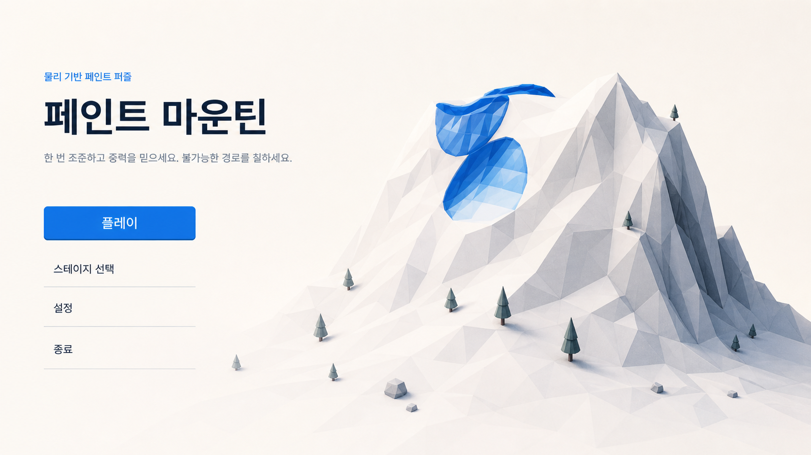
강점
제목, 한 줄 설명, 플레이 순서가 명확합니다. 플레이만 파란 주 행동으로 처리한 점도 좋습니다.
문제
버튼 열이 너무 넓고, 보조 행동의 경계·초점이 어색합니다. 산은 밝은 바탕에 묻혀 게임의 촉각적 성격을 충분히 보여주지 못합니다. 1920×1080에서는 버튼 폭과 빈 공간이 더 커집니다.
개선
메뉴 최대 폭을 제한하고 보조 행동은 텍스트 중심으로 정리합니다. 산 프리뷰의 대비·크기를 높여 제목과 균형을 맞춥니다.
02스테이지 선택
30개 산 중 하나를 비교하고 시작하는 화면
{kind=link}
{kind=link}
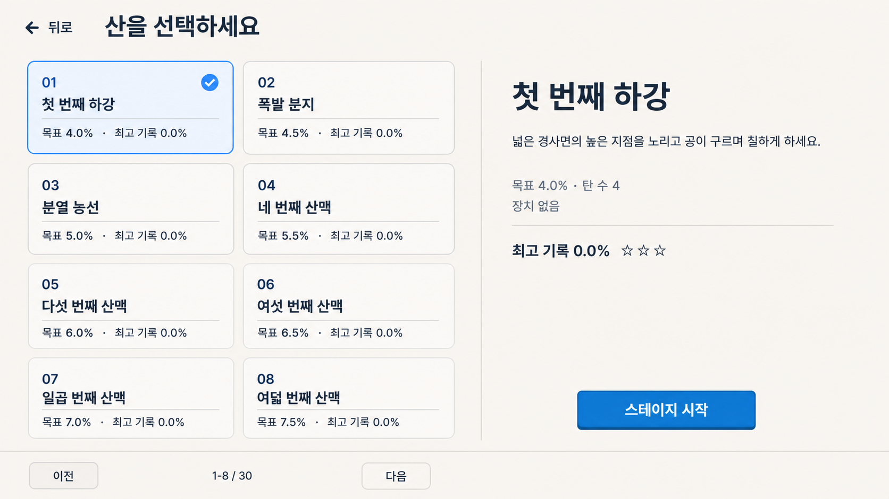
강점
선택 목록과 상세 설명이 분리되어 있고, 선택 상태는 색과 테두리로 드러납니다.
문제
번호·이름·목표·최고 기록이 거의 한 줄로 붙어 카드 경계와 충돌합니다. 특히 한국어 이름이 길어질수록 읽는 속도가 떨어집니다. 시작 버튼은 상세 영역 전체 폭을 차지해 필요 이상으로 무겁습니다.
개선
카드 안에서 번호/이름과 목표/기록을 두 줄로 분리하고 16px 이상 여백을 확보합니다. 시작 버튼은 상세 내용 폭에 맞춰 줄이고 페이지 이동은 한 줄로 정렬합니다.
03브리핑
지형과 장치를 살핀 뒤 조준으로 넘어가는 화면
{kind=link}
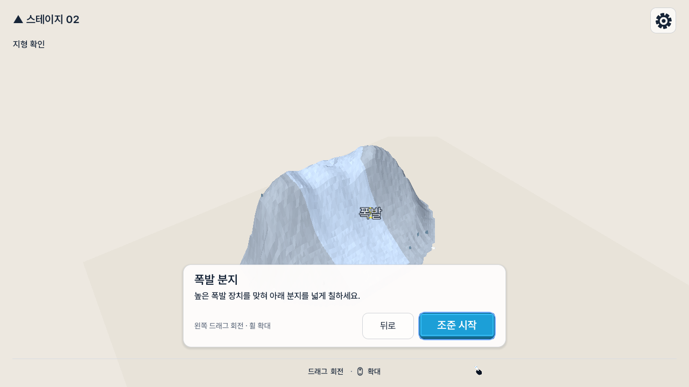
{kind=link}
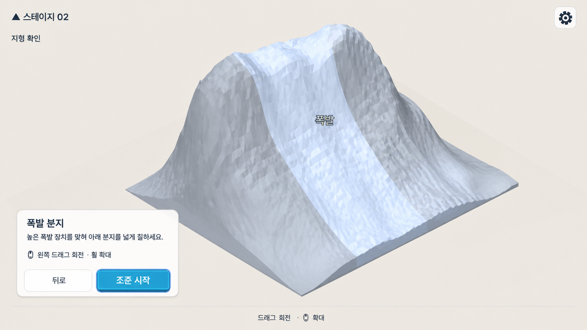
강점
목표 문구와 조준 시작이 한 표면에 모여 다음 행동은 명확합니다. 장치 이름도 세계에 직접 표시됩니다.
문제
산이 작고 중앙 목표 패널이 핵심 지형을 가립니다. 지형 확인 화면인데 실제 조사 대상보다 안내 카드가 더 강합니다.
개선
산을 세로·가로 모두 확대하고 목표 표면을 하단 모서리로 옮깁니다. 중앙에는 지형과 장치만 남기고, 시작 버튼만 파란색으로 유지합니다.
04조준 보기
목표점을 정하고 각도·파워를 조정한 뒤 발사하는 핵심 화면
{kind=link}
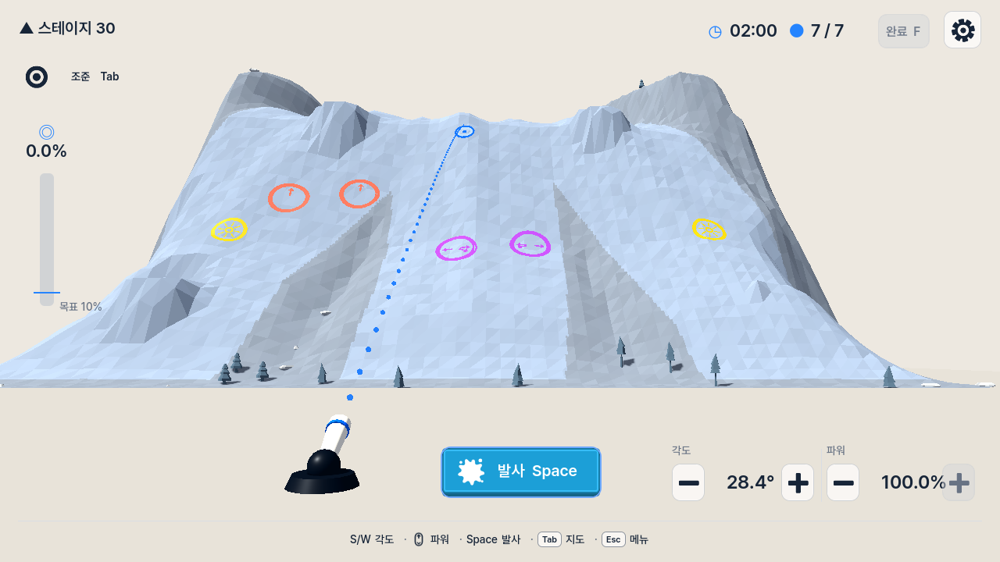
{kind=link}
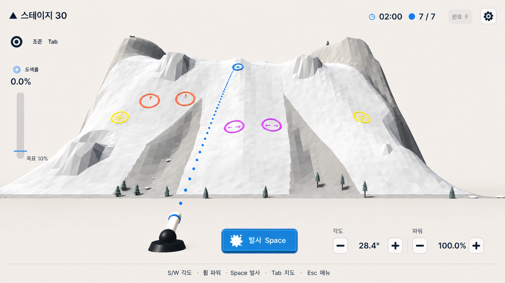
강점
산과 궤적이 중심이고, 발사가 유일한 파란 주 행동입니다. 각도·파워와 하단 맥락 안내도 실제 조작에 맞습니다. 1920×1080에서도 겹침은 보이지 않습니다.
문제
밝은 면이 서로 가까워 일부 경사·지지면이 약하게 구분됩니다. 1280×720 하단에서는 대포, 발사, 각도·파워, 설명이 가까워 밀도가 높습니다.
개선
지지면 명도 차를 조금 키우고 하단 요소의 기준선을 더 명확히 맞춥니다. 기존 기능과 구조는 유지하는 편이 안전합니다.
05지도 보기
산의 전체 구조를 회전·확대해 조사하는 화면
{kind=link}
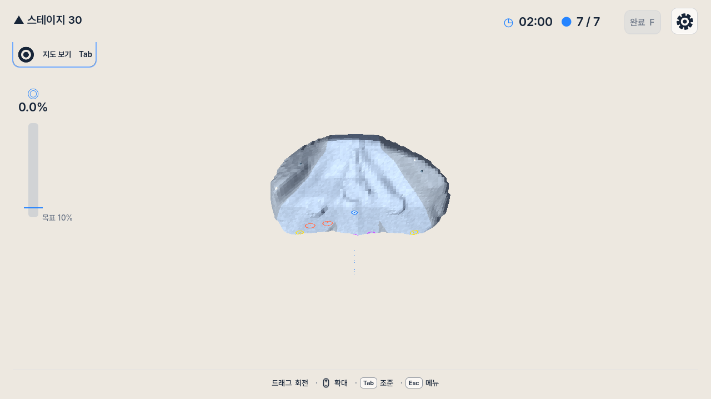
{kind=link}
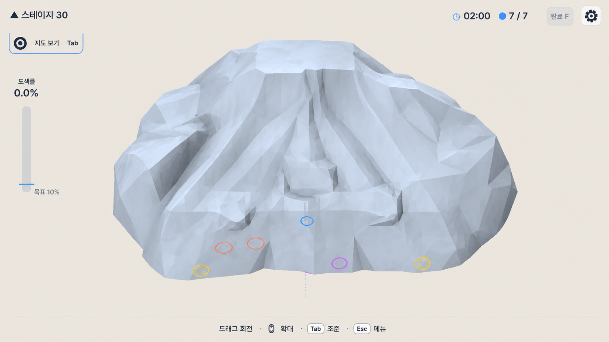
강점
발사와 조준 조작이 숨겨져 관찰 모드임은 분명합니다. 하단 문구도 드래그·휠·Tab·Esc만 보여줍니다.
문제
산이 화면의 약 20% 정도로 축소되어 경로와 장치 위치를 읽기 어렵습니다. 커다란 빈 공간이 조사 작업의 초점을 약화합니다.
개선
산을 중앙 작업 영역의 55–65%까지 확대합니다. 좌측 상태와 상단 메뉴의 안전 여백만 남기고, 초점 표식은 지형과 함께 읽히게 합니다.
06탄환 추적
발사한 공과 첫 접촉·페인트 결과를 관찰하는 화면
{kind=link}
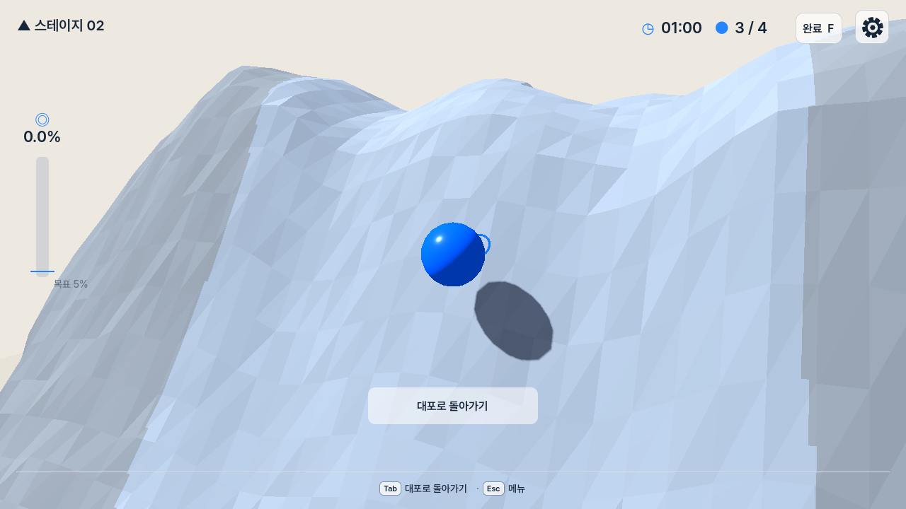
{kind=link}
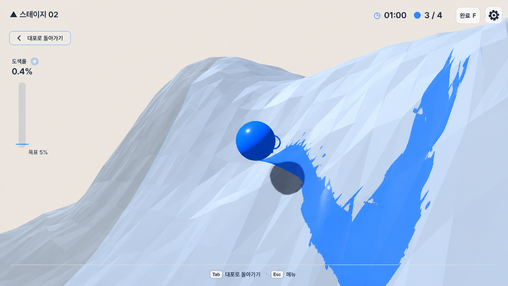
강점
조준 컨트롤이 사라지고 공이 크게 보이므로 상태 전환은 이해하기 쉽습니다. 복귀 행동도 명시되어 있습니다.
문제
복귀 버튼이 화면 중앙에 떠 있어 공의 그림자와 접촉 지형을 가립니다. 핵심 원인-결과 장면과 직접 경쟁합니다.
개선
복귀 행동을 좌상단 또는 좌하단 안전 영역으로 이동합니다. 중앙에는 공, 접촉, 페인트만 남기고 하단 문구는 보조 수단으로 유지합니다.
07일시정지
플레이 입력을 막고 다음 내비게이션을 선택하는 화면
{kind=link}
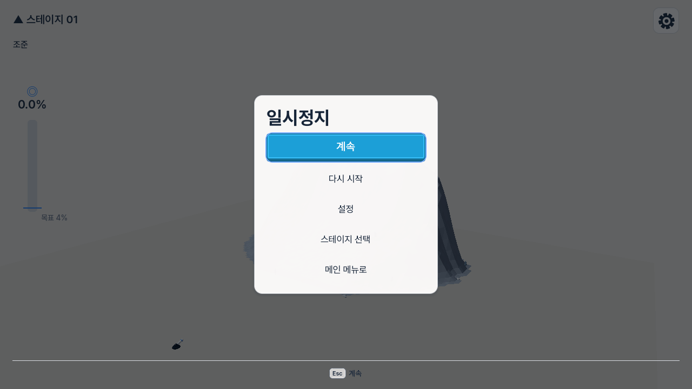
{kind=link}
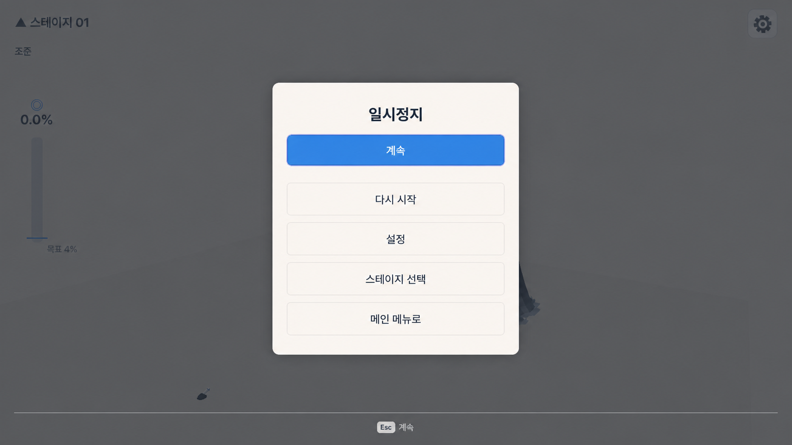
강점
한 개 모달, 분명한 계속 행동, 올바른 메뉴 순서가 안정적입니다. 배경이 어두워져 입력 차단 상태도 읽힙니다.
문제
보조 행은 텍스트만 떠 있는 느낌이고 실제 클릭 영역을 시각적으로 추정하기 어렵습니다. 배경의 Gear도 약하게나마 조작 가능한 것처럼 보입니다.
개선
각 행의 높이와 경계를 더 일관되게 보여주고, 배경 조작 요소는 더 확실히 비활성화합니다. 계속의 파란 초점은 유지합니다.
08설정
오디오·게임플레이·화면·언어를 조정하는 화면
{kind=link}
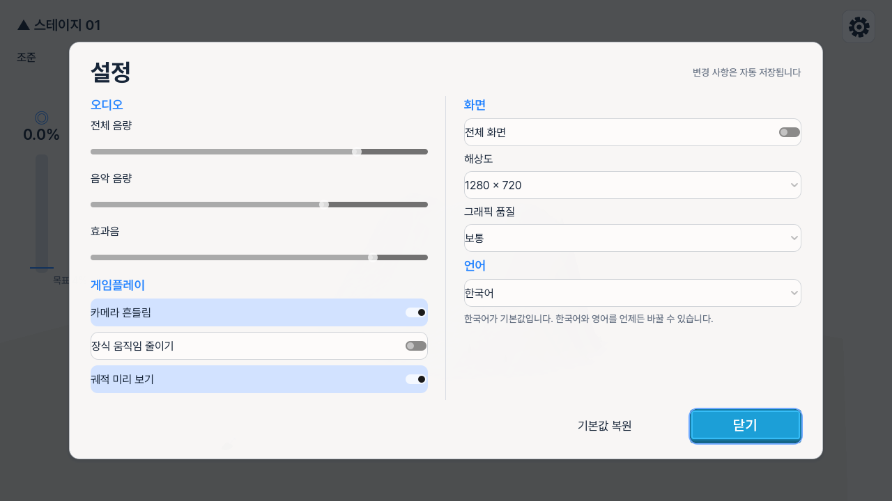
{kind=link}
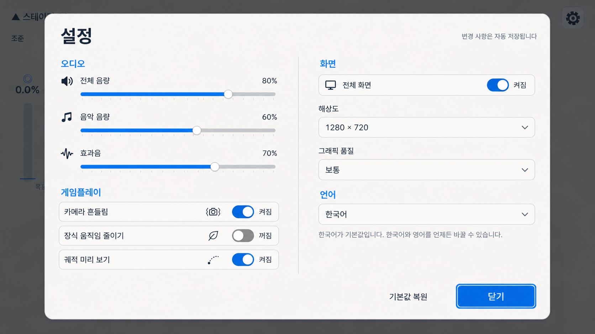
강점
두 열 구성이 논리적이며 화면·언어 선택은 자연스럽습니다. 설정 안에 다시 시작을 넣지 않은 흐름도 올바릅니다.
문제
슬라이더 트랙·손잡이와 토글이 얇고 작아 조작 가능성이 약합니다. 켜짐/꺼짐은 위치와 색에 크게 의존합니다. 회색 도움말은 밝은 배경에서 대비가 약할 수 있습니다.
개선
행 전체를 44px 이상 클릭 영역으로 보고, 토글 상태를 텍스트와 위치로 함께 표시합니다. 슬라이더 값 표시를 가까이 두어 조작 결과를 즉시 확인하게 합니다.
09직접 종료 결과
플레이어가 완료를 선택해 현재 도색 결과를 확정한 상태
{kind=link}
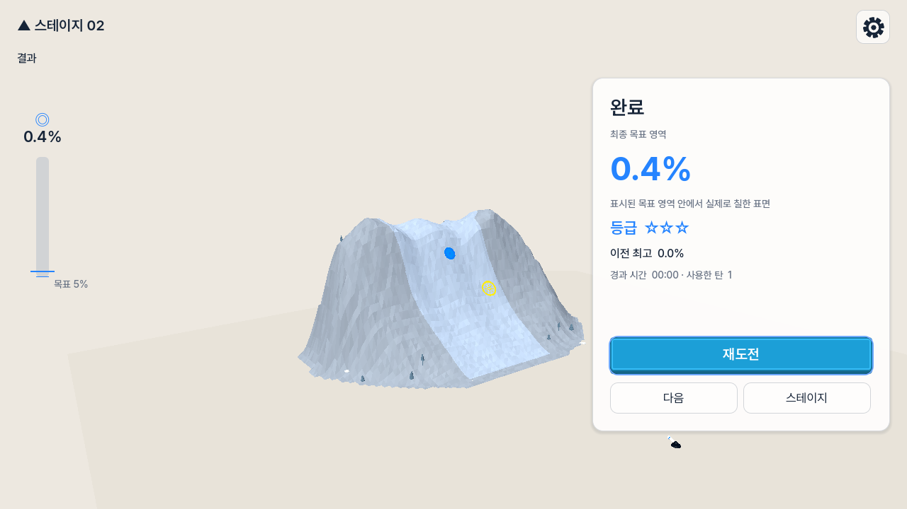
{kind=link}
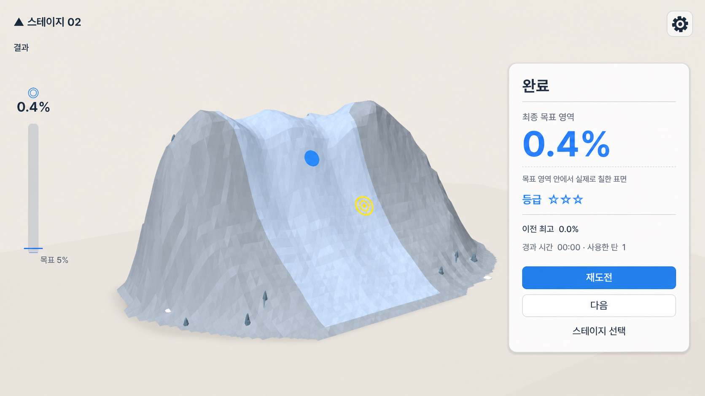
강점
도색률, 등급, 이전 최고, 시간과 사용 탄 수가 한 패널에 모여 있습니다. 재도전이 주 행동인 점도 명확합니다.
문제
패널이 넓고 버튼 세 개가 비슷한 무게로 보입니다. 1920×1080에서는 산이 더 작아져 최종 결과를 세계에서 확인하기 어렵습니다.
개선
재도전만 파란 버튼으로 유지하고 다음은 보조, 스테이지 선택은 텍스트 행동으로 낮춥니다. 산을 확대해 수치와 실제 도색 자국이 함께 보이게 합니다.
10시간 종료 결과
제한 시간이 끝나 현재 도색 결과가 확정된 상태
{kind=link}
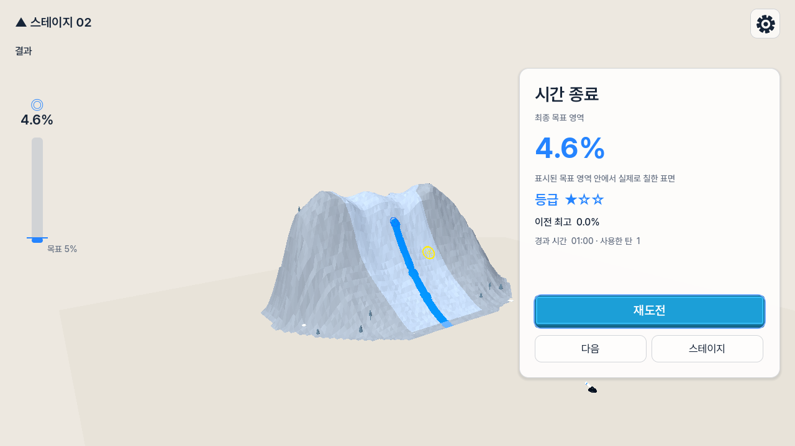
{kind=link}
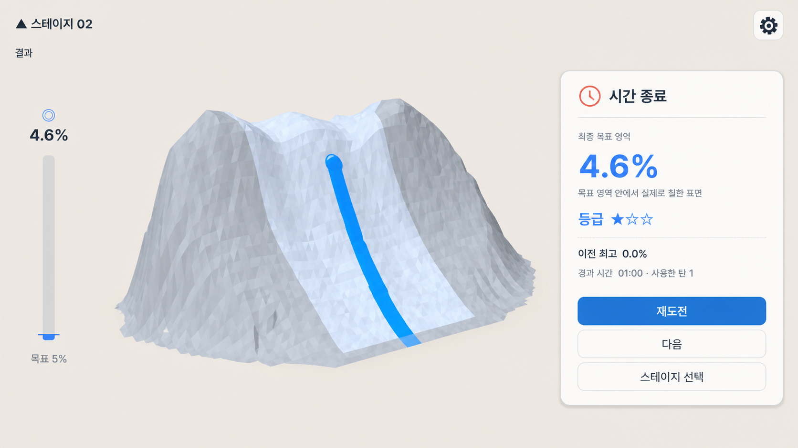
강점
제목이 직접 종료 결과와 다르며, 최종 파란 페인트 경로가 세계에 남아 있습니다.
문제
종료 사유의 차이는 제목 한 줄에 거의 전부 의존합니다. 나머지 패널 구조가 직접 종료와 같아 빠르게 구분하기 어렵습니다.
개선
시계 형태와 제목을 함께 사용해 색에만 의존하지 않고 시간 종료를 표시합니다. 결과 수치와 행동 위계는 직접 종료 화면과 일관되게 유지합니다.
접근성·상태 검토
스크린샷에서 확인할 수 있는 범위와 확인하지 못한 범위를 분리했습니다.
| 항목 | 확인 결과 | 한계 |
|---|---|---|
| 한국어 맞춤 | 1280×720과 대표 1920×1080에서 잘림은 보이지 않음. 스테이지 카드는 여백이 부족함. | 더 긴 번역 문자열과 200% 텍스트 확대는 미검증. |
| 초점 표시 | 주 행동에 2px 수준의 파란 초점/외곽선이 보임. | 전체 키보드 이동 순서와 초점 복원은 스크린샷만으로 확인 불가. |
| 색 이외의 상태 | 장치 문양은 색과 형태를 함께 사용. 시간 종료 개선안도 시계 형태를 병행. | 현재 토글과 일부 선택 상태는 색·위치 의존이 큼. |
| 대비 | 남색 본문과 파란 주 행동은 대체로 읽힘. | 회색 도움말, 비활성 완료, 밝은 지형 면은 수치 측정하지 않음. |
| 대상 크기 | 주 버튼은 충분히 큼. | 슬라이더 손잡이, 작은 토글, Gear의 실제 키보드 이름과 클릭 영역은 정적 화면만으로 확정 불가. |
| 모션·입력 차단 | 일시정지 스크림과 탄환 추적 전용 상태가 시각적으로 구분됨. | 감소된 모션, 입력 누출, 실시간 상태 알림은 실행 상호작용 테스트가 필요. |
대표 1920×1080 교차 확인
같은 현재 릴리스에서 메뉴, 선택, 조준, 설정, 결과를 추가 캡처했습니다.
{kind=link}
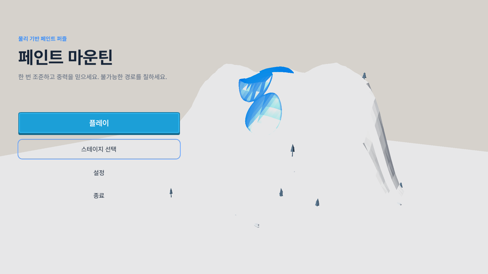
{kind=link}
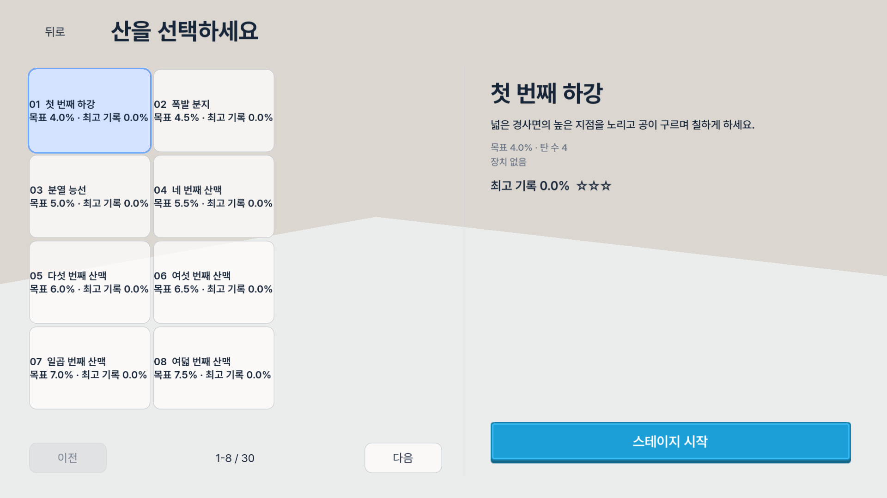
{kind=link}
{kind=link}
{kind=link}
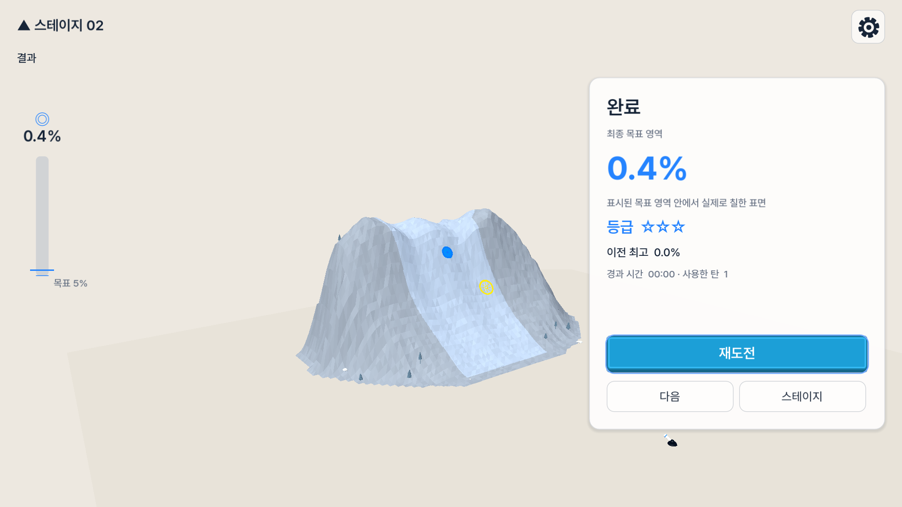
방법·증거·한계
결론이 무엇을 근거로 하는지 명시합니다.
| 제품·사용자 목표 | 고정 대포에서 목표, 각도, 파워를 계획하고 발사 후 물리 접촉과 도색 결과를 이해하는 Windows 데스크톱 3D 퍼즐. |
|---|---|
| 검토 기준 | 유효한 source brief, 현재 구현 기록, Quiet Context UI 지침, 승인된 시각 기준, UI/UX 접근성 차단 기준. |
| 실제 캡처 | 현재 Windows 릴리스 실행 파일의 숨김 Delivery Capture 경로. 한국어 1280×720 전체 10상태 + 1920×1080 대표 5상태. |
| 개선 이미지 | 각 현재 캡처를 편집 기준 이미지로 첨부한 built-in ImageGen UI mockup. 실제 기능과 문구를 보존하고 한 화면당 한 개선 방향 생성. |
| 미포함 상태 | 스테이지 로딩/재시도는 전용 캡처 케이스가 없어 포함하지 못함. 과거 STAGE_FAILED 화면은 현재 상태 기계에서 도달 불가하므로 사용하지 않음. |
| 검증 한계 | 스크린샷은 키보드 동작, 스크린리더 이름, 실제 대비 수치, 모션, 입력 누출, 3D 깊이, 물리 정확성, 성능을 증명하지 않음. |
UIUX gate evidence: Surface = Windows desktop game flow · Depth = Level 4 audit/redesign · Viewports = 1280×720 전체, 1920×1080 대표 · States = 10 · Result = 현재 구현 blocked. 이유는 지도 보기의 조사 대상 축소, 브리핑/탄환 추적의 중앙 가림, 선택 카드의 여백 부족입니다.
이미지 생성에 사용한 최종 프롬프트 세트는 imagegen-prompts.txt에 보존했습니다.